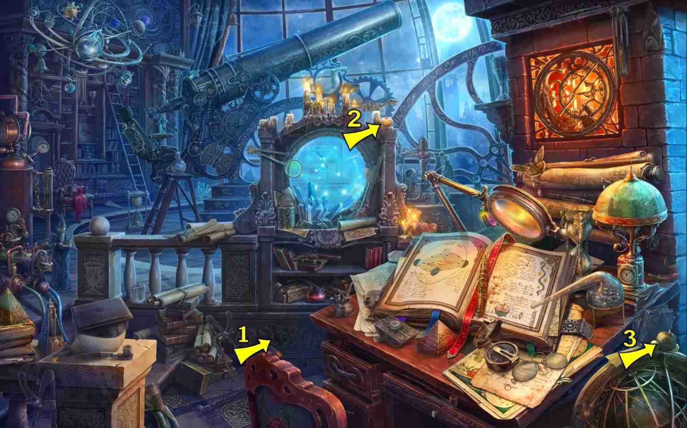
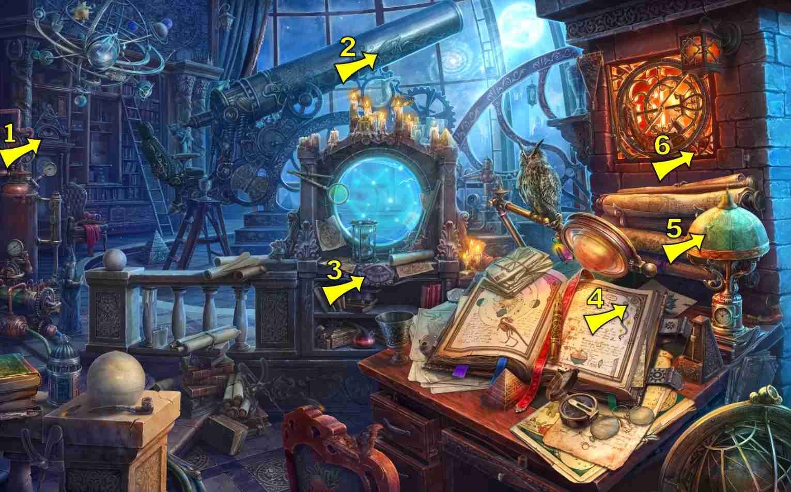
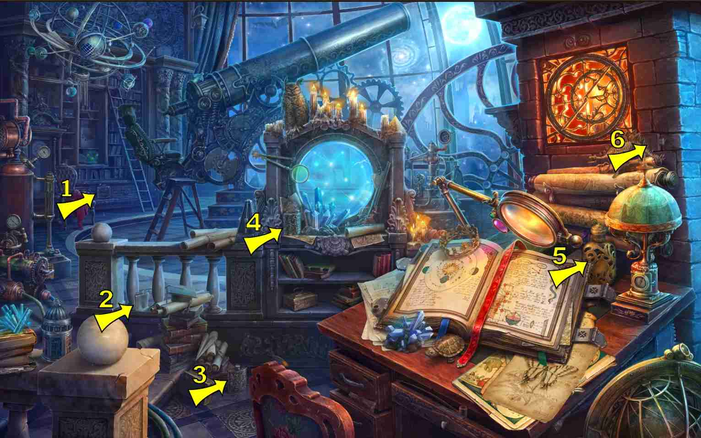
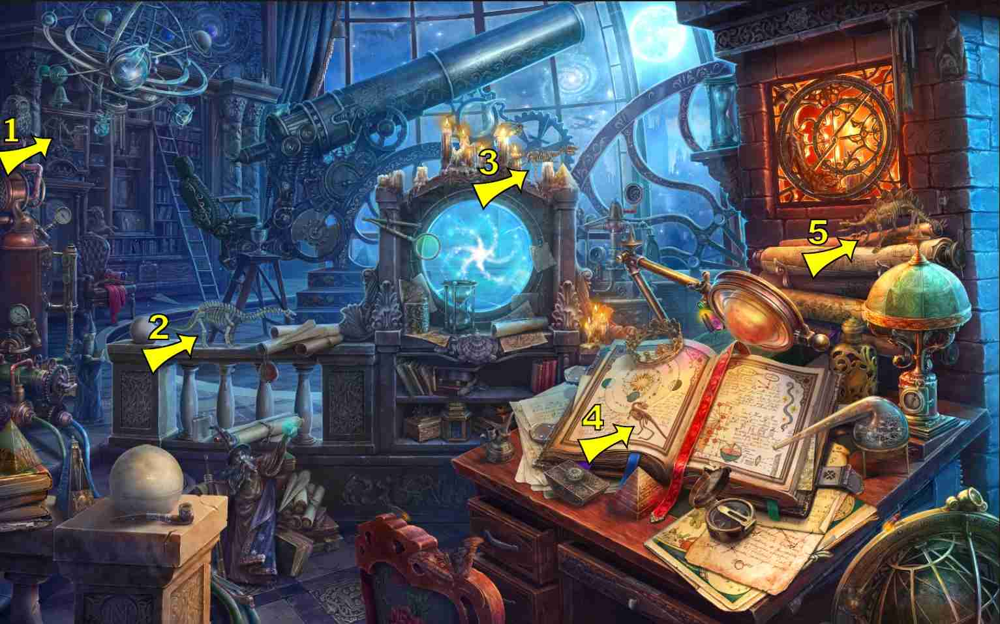

6 items:
- On the lampshade, on desk
8 items:
- Carved into the long drawer in desk


6 items:
- On boiler on left
- On the globe of the astrolabe, bottom right corner

4 items:
- Bottom right astrolabe, top outer rim

8 items:
- Can be drawn inside the open book on the right table

9 items:
- Bottom right on star map (aka round window)
- Bottom right astrolabe, overlay on inner frame
- Inside open book on desk, on left page
- Top of astroglobe, bottom right corner
1 items:
- On middle shelf of right bookcase